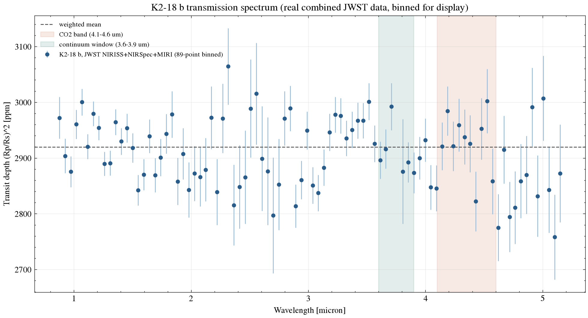
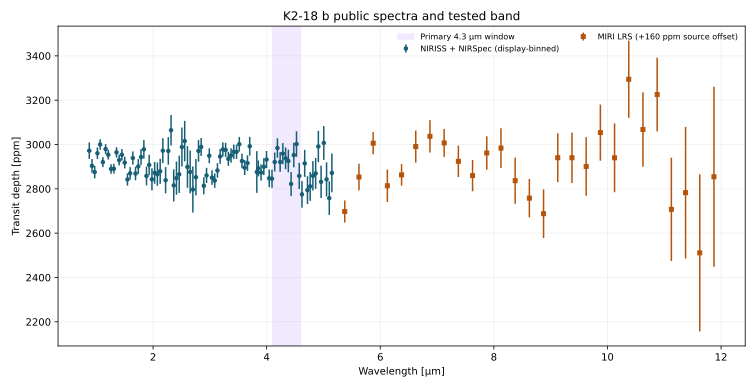

Data source notes
SHA-256, LF-normalised text
5b8d896752c8497fec1bcd8aad08816cde15ddd0ffa7503b5e3961fdc9fd1a0eBrowse 14 versioned evidence files. Table previews simply display stored rows. Consult the project report for the source, processing steps, and inference assumptions.


5b8d896752c8497fec1bcd8aad08816cde15ddd0ffa7503b5e3961fdc9fd1a0ed8993dd4af23381c6a04d814071c1d32bc3a1e2dbb159b772a6fc5ef8c0561957bbb9be29b3eed52a4ff66880ac1074fae586540d8c4d82fd99a8dd5b7c4b96f1b0959ba7513ee2c4ff14b8c6060cec05670a547d85f1fd99b8a6fb6eae0e7c20622a1761cbd1e8f920425fd0b54b9489517f66f0a885ed8190cfc0471aedf24c3e9003443f2501789309238121acc6dcfe8a2143a50945f48f1044dd80d07c9| quantity | value | unit |
|---|---|---|
| nir_native_points | 4411 | count |
| miri_published_bins | 28 | count |
| miri_nonoverlap_bins | 27 | count |
| primary_co2_band_excess | 4.1 | ppm |
80109f86ba3b32b05bb25c13a753c4848287fedad47f40fb6b6255be56b795f35be5039027af257ea30b9fa92e67184fe508bfc878ed3adc490f2228938e1398| band_id | band_lo_micron | band_hi_micron | continuum_id | continuum_lo_micron | continuum_hi_micron | band_points |
|---|---|---|---|---|---|---|
| B1 | 4.05 | 4.55 | C1 | 3.5 | 3.9 | 745 |
| B1 | 4.05 | 4.55 | C2_primary | 3.6 | 3.9 | 745 |
| B1 | 4.05 | 4.55 | C3 | 3.7 | 4.0 | 745 |
| B1 | 4.05 | 4.55 | C4 | 3.8 | 4.05 | 745 |
e4e303423e4373b28748c672f85154b46acb5b608346f9cc2dc1e90a77df4769a38b389d16b4138c3dfeb5a11101ff3a1861ccf0c20a4ece2f1f701d0bfe5cc6| removed_index | removed_wavelength_micron | weighted_mean_ppm | weighted_mean_error_ppm | chi_square | degrees_of_freedom | reduced_chi_square |
|---|---|---|---|---|---|---|
| 0 | 5.375 | 2764.3644651 | 17.1811594978 | 35.5738146129 | 25 | 1.42295258452 |
| 1 | 5.625 | 2743.82720257 | 16.8606810107 | 53.5088681627 | 25 | 2.14035472651 |
| 2 | 5.875 | 2727.85614783 | 17.1553466655 | 49.2242179983 | 25 | 1.96896871993 |
| 3 | 6.125 | 2744.63255487 | 16.6533127832 | 52.6964666593 | 25 | 2.10785866637 |
3028fe21d04bb76620921567448ca39ee300111a1a93820be431b82a5e6a8ae7e3cbf7e68dab5086d572dab0b2101b1e01e921373fe9cfbb743f8ddeb532c327e6020ef4398580d0983c5903b75f0ddcfe7b45fe88e7a22624b9d29b9d72b098ee92ba0acfec69248595213c189388c23b4832a29051cb4edf7872c37262c7b2SHA-256 values verify the stored files. They do not independently validate the scientific analysis. Rebuild this page with python scripts/evidence_catalog.py followed by python scripts/render_evidence_page.py.